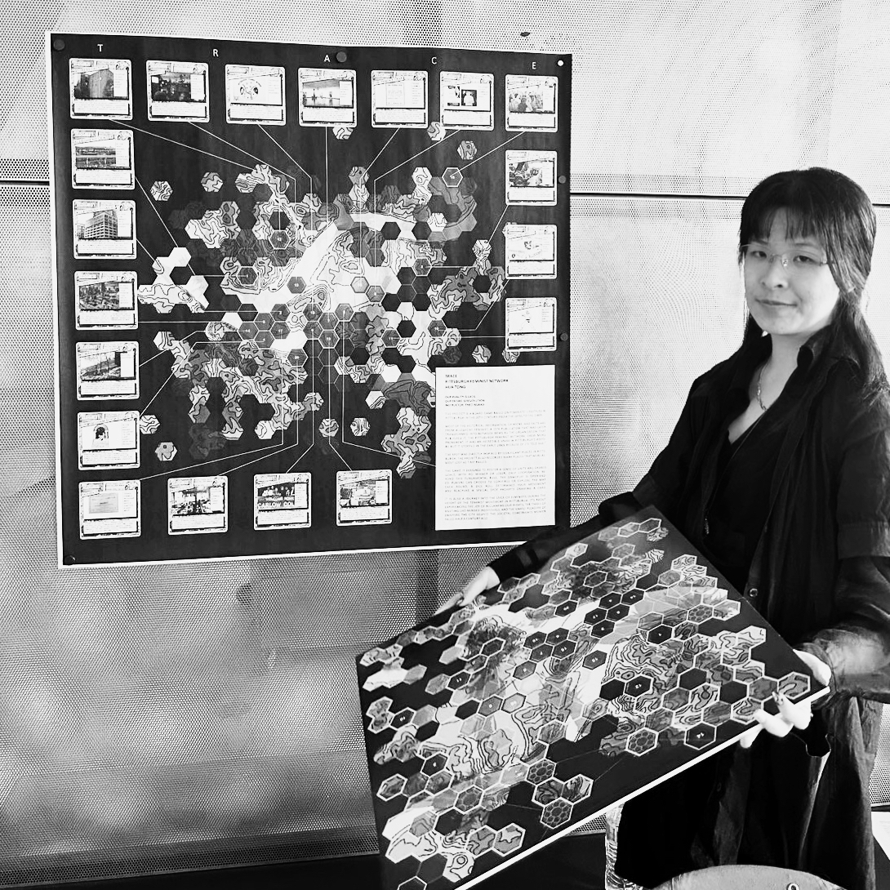
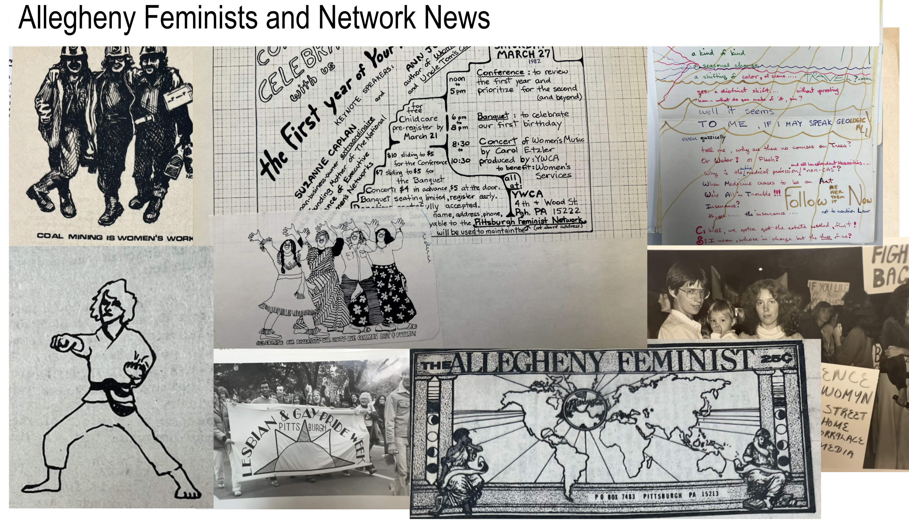
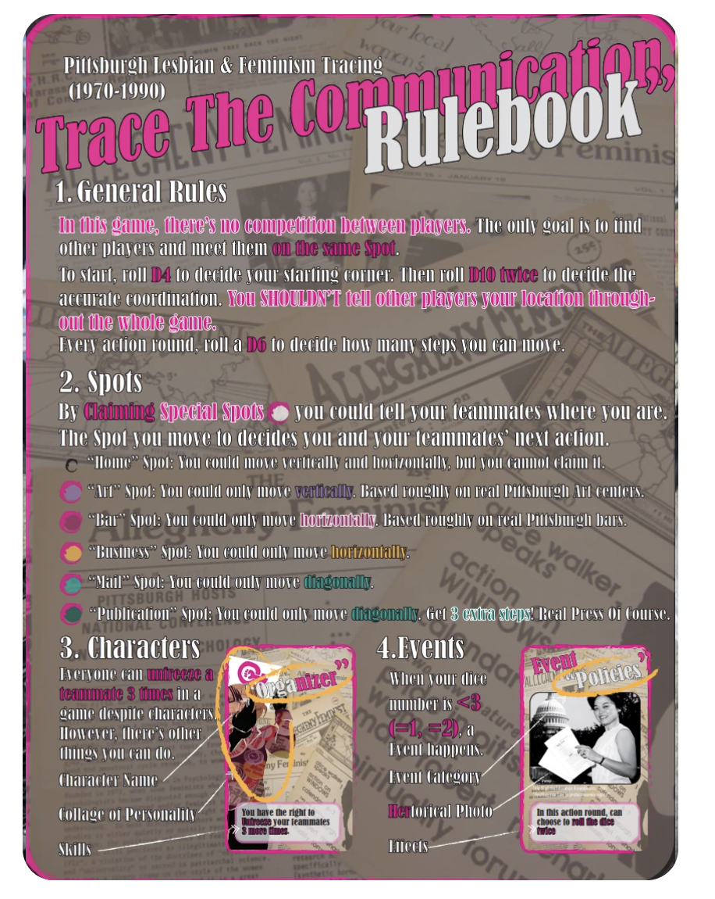
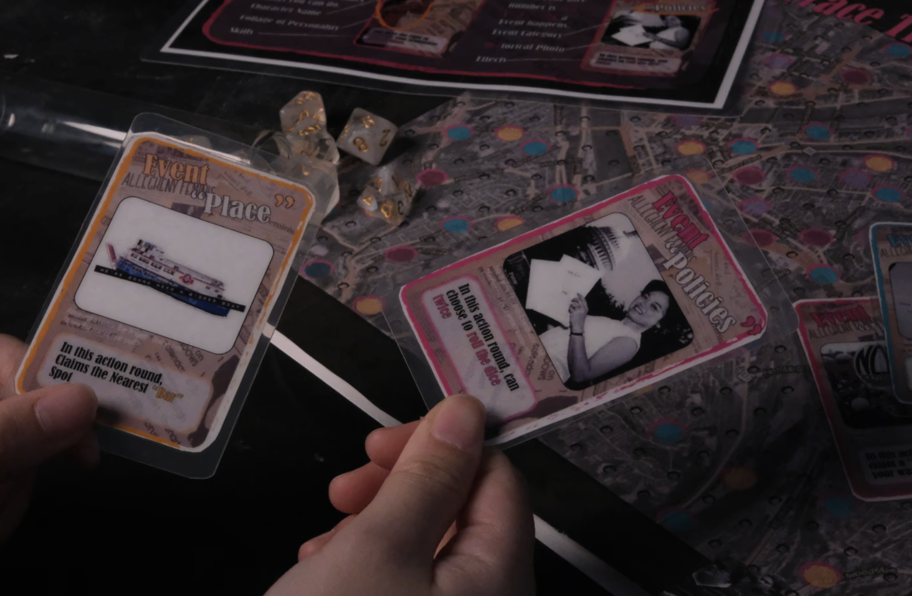
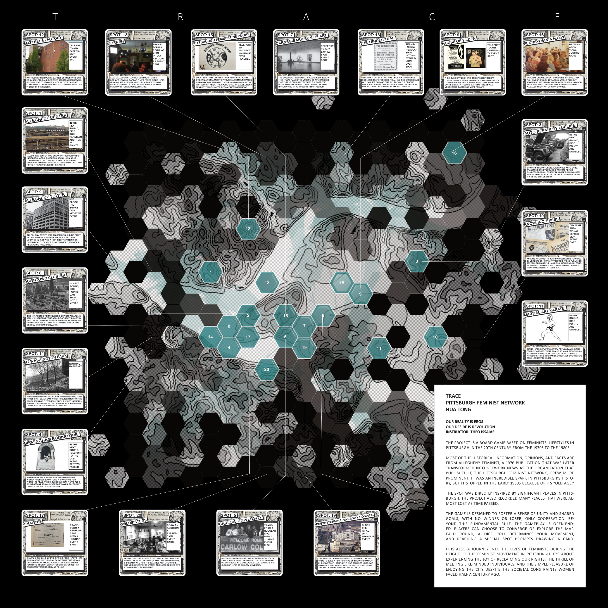
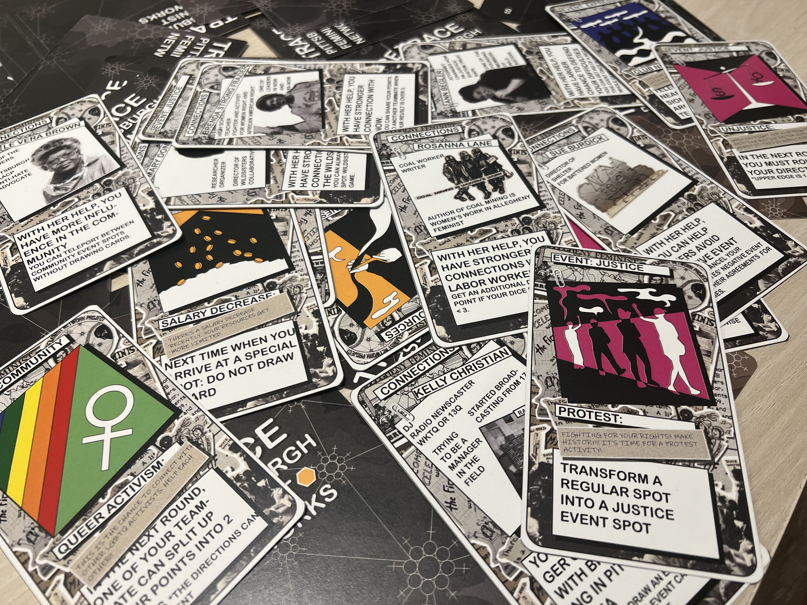

Pittsburgh Feminist Network
Its card locates the organization and the publication that grew into Network News. In play, it lets you return to any spot you have reached. The city begins to remember your route.
A playable map of lesbian feminist life in Pittsburgh, made from the people, places, and words left in its archives.
Play Trace
Draw a Protest card and an ordinary hexagon becomes a Justice space. On a later turn, the same part of the city can lead somewhere new. A past action has changed the next journey.
Trace is a board game I made from research into lesbian feminist communities in Pittsburgh during the 1970s and 1980s. Players cross a map of the city, encounter people and events through cards, and decide where to go next.
There is no winner and no required destination. In the digital edition, one to four players can explore the same network at their own pace and find one another along the way.
I began by looking for online documentation of lesbian feminism in 1970s Pittsburgh. A reference to a coffee shop and a feminist press led me to The Allegheny Feminist. I followed that publication into the University of Pittsburgh archives and read issues from the 1970s into the 1980s.
Alongside political arguments were meeting notices, drawings, celebrations, names, and addresses. The publication later became Network News as the Pittsburgh Feminist Network grew. I kept noticing how much of this history depended on ordinary ways of finding one another: a place to gather, a publication to read, a person who could connect you to someone else.
Research material: issues of The Allegheny Feminist and Network News, archival photographs, and documents of Pittsburgh feminist organizations.

My first board borrowed the path of Snakes and Ladders. Players rolled, met obstacles, drew from fifteen event cards and seven character cards, and tried to reunite. The goal made cooperation part of the rules.
Making that version clarified what the board was still missing. A single route gave every player the same sense of progress, while the archive kept pointing me toward many people and places at once. I wanted the next version to let players choose whether to meet, change course, or simply see more of the city.


The revised deck gave different kinds of source material different jobs. A numbered place anchors the map. A connection introduces a person and what they can make possible. An event changes the conditions of a turn.
Its card locates the organization and the publication that grew into Network News. In play, it lets you return to any spot you have reached. The city begins to remember your route.
The card introduces an anti-hate advocate and Pittsburgh NAACP leader. With her help, a player can move between Community spaces. Meeting someone changes which parts of the city feel close.
This Justice card turns an ordinary hexagon into another Justice space. The next trip across the board meets a place altered by an earlier action.
The final board places a hexagonal grid over Pittsburgh's contours. Twenty numbered locations connect to fixed place cards; other spaces can bring a person or an event into the journey. Players can converge, wander, return, and change the map as they go.


In the digital edition, you choose a starting hexagon and roll a six-sided die. After the die lands, you choose a direction. The space where your movement ends decides what you encounter.
A numbered blue space reveals the one address card linked to that place.
A brown connection space introduces a person you have not yet met.
A colored space draws an event from its category. Events can return on later turns.
The card may affect the next roll, move you elsewhere, protect you, or change a regular hexagon. A turn leaves a trace for the next one.
A person cannot be contained in a special ability, and a card cannot reproduce what it took to organize a place half a century ago. That limit stayed with me while I made Trace. I kept names, images, and descriptions on the cards so each action would still point back to a source and a life beyond the rule.
The game asks players to cross the city through those relationships. Sometimes a card helps; sometimes it interrupts; sometimes it sends you back. I hope the movement gives someone a reason to look again at the people and places that made these paths possible.